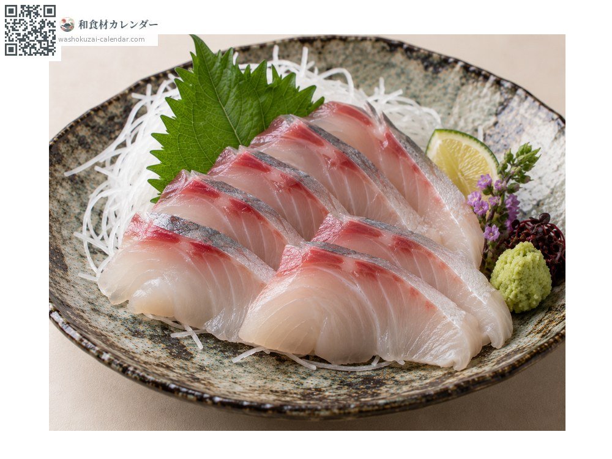
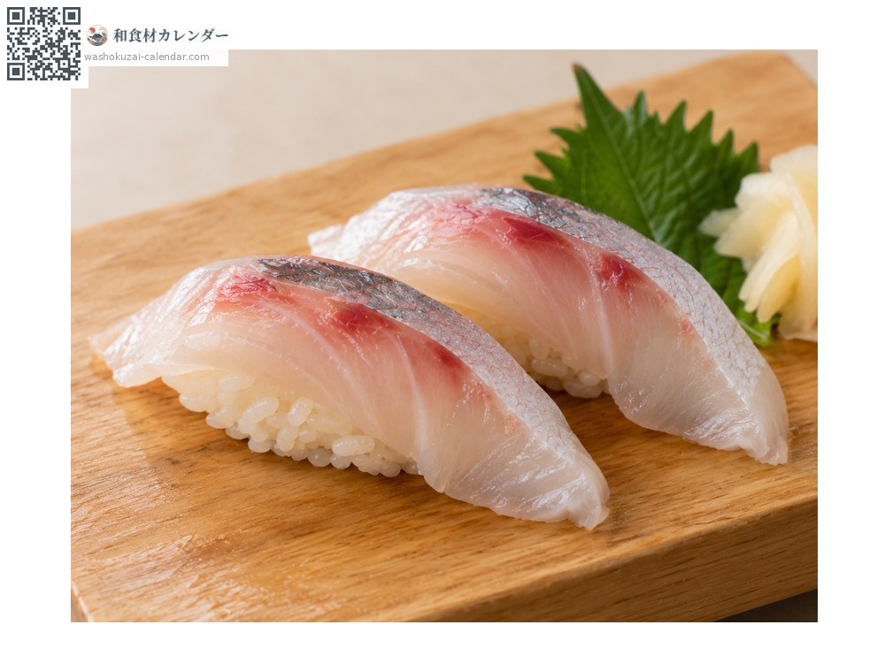
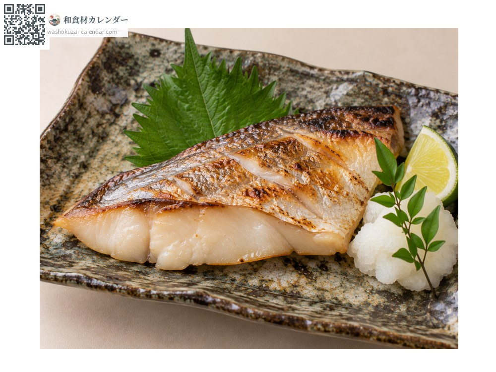
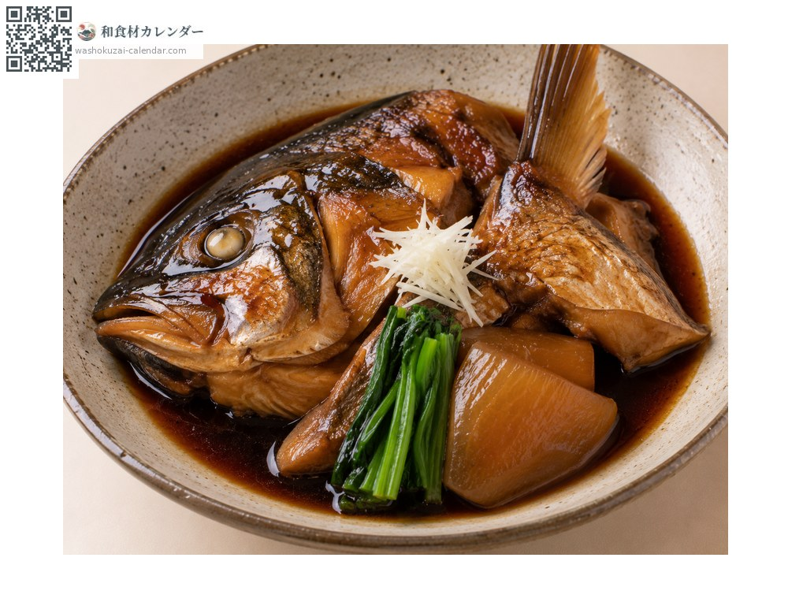

Seafood
White trevally
シマアジ しまあじ shimaaji
Also known asshimaaji
At its best in Jun, Jul, Aug, Sep

When it is at its best
Jan
Feb
Mar
Apr
May
Jun
Jul
Aug
Sep
Oct
Nov
Dec
In seasonAvailable
How to cook

Sashimi
Considered the finest of the jack family, combining refined fat with a firm bite.

Sushi
Prized as a topping for nigiri. The white flesh has a strong depth of flavour.

Shioyaki (salt-grilled)
Simply grilled to taste the fish itself.

Ara-ni (head and bones simmered)
Head and collar simmered in sweet soy. The bones give a rich broth and the meat is full-flavoured.
How to choose
A clear yellow band along the flank. Clear eyes and good thickness through the body.
Storage
The firm flesh keeps relatively well. Pat dry, wrap and refrigerate, using within two days.
Main areas
Good to know
Wild catches are small, and it commands the highest price of any jack. The yellow band along its side gives it its Japanese name.